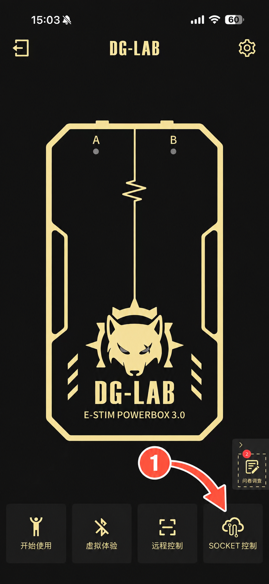
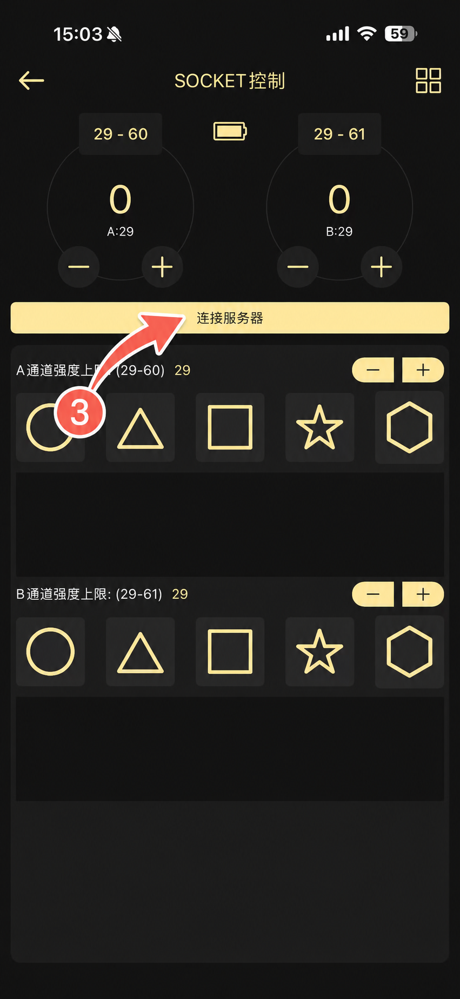
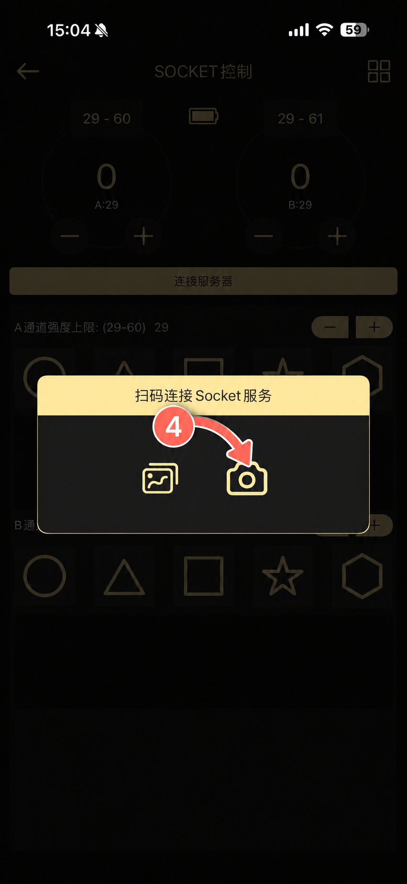

RICCA × DG-LAB / FIELD GUIDE
先设上限，
再连接并核对。
1.0.1 独立 Windows x64 ZIP。完成教程并保存大于 0 的硬上限后，连接即按有效游戏状态自动输出。
全局急停 Ctrl+F12，可在个性化范围自定义。按下归零并锁定全部输出，不切换恢复。软件上限不保证物理安全。
01 / 开始前准备
- Windows x64 与 Ricca 1.4.1 中／英文相同指纹构建；其他构建保持阻止输出。
- DG-LAB 3.0 及手机 App，手机与电脑在互通的局域网中。
- 解压整个便携文件夹，运行 Ricca-x-DGlab.exe；已包含 Python 运行时，不含游戏、不安装 BepInEx、不注入。从源码开发才需 Python 3.11 与 setup_native.ps1。
- 在败北前启动以记录 HP 变化。已登记的剧情／鉴赏场景可直接进入循环，不会凭空补发死亡惩罚。
已适配游戏构建指纹（不是安装包校验值）：
5D815721F6B45251137DC8AB78446FAA3A79CFC3BC0520FC4D8EB8C872BDB52B02 / 使用 Socket 模式连接
- 先完成教程并保存自己设定的 0–100 硬上限。0 禁用输出；不确定时保持为 0。
- 进入「设备与游戏」，选择手机可访问的 IPv4，等待 Socket 就绪；避免选到不可达的 VPN／虚拟网卡。
- 手机 App 选择 Socket 模式，扫描插件生成的二维码。
- 连接成功即自动同步游戏反馈，不再需要“测试 A/B”或单独“启用输出”。扫码前务必先设保守上限。




默认按 HolyKnightRicca.exe 查找。失败时可选择与 GameAssembly.dll 同目录的真实游戏 EXE 作为路径回退。
03 / 首次测试前核对
- 保存保守强度与硬上限；档位名称和数值上限都不保证人体安全。
- 核对 HP、场景和动作。未支持版本、失效或错误读数必须阻止输出。
- 按照设备说明配置后，核对普通暂停、紧急归零、手机断连和游戏退出的停止行为。
- 死亡惩罚优先于普通暂停。要停止一切来源，请用「紧急归零」，而不是普通暂停。
紧急归零保持锁止，必须明确恢复。硬上限、设备连接和有效新读数始终必需。网络与设备调度存在延迟，软件不能保证同帧停止或实际送达。
全局急停快捷键
默认 Ctrl+F12。在“个性化范围 → 全局急停键”点击录入并直接按键，也支持 Pause、F10 等单键，Esc 取消。教程倒数第二页也可保存此设置。录入或保存先急停，完成后须手动恢复；升级保留原快捷键。F12 监听不拦截游戏按键，其他程序也可能响应。启动注册失败时保持停止输出。
04 / 通道与波形
A/B 通道各自分为“战斗反馈”和“剧情／鉴赏”。战斗选择 HP、动作、两者或关闭；剧情选择固定、循环、音频及组合。重叠取较强信号，死亡具有独立优先级。
- 可独立设置扣血阈值、档位或自定义强度及波形。短事件 0.1–3 秒，死亡最长 10 秒，破甲事件最长 5 秒。
- 挣扎反馈持续至挣脱，没有自定义持续秒数；格挡动作不触发惩罚。
- 破甲前 ×1.0；本次生命首次破甲后固定 ×1.2，不叠加。复活或重进游戏重置；最终输出仍受硬上限限制。
- 选择预设或编辑 16 点波形；保存后自动应用，并保留普通暂停状态。
05 / 可选音频与败北 CG
音频共感需主动开启：选择输入／系统回环，应用设置，并在目标通道选择音频策略。它按包络转换，不识别说话人或语义；系统回环可能包含其他程序声音。
同一角色 HP 正值→0 立即触发有界死亡惩罚，普通暂停不会拦截。后续匹配败北场景在确认互动期间循环配置波形，入场不重复已触发的死亡惩罚。
互动循环忽略游戏内部场景暂停位，但遵循插件普通暂停和明确的游戏暂停。紧急归零停止死亡与循环输出。切场读错时阻止输出，但保留败北证据供新读数重新确认。
34 个已登记场景支持直接剧情／鉴赏入场，也支持中途启动。各通道在“剧情／鉴赏”独立选择固定、循环、音频、固定＋音频、循环＋音频。未知场景需明确登记。
音频增益 0–10×，松开即保存。“循环＋音频”可设最低强度，在语音空隙维持输出，0 表示关闭。显式休止段、0× 静音、音频失联、暂停及急停仍归零。系统回环可能包含其他程序声音，不做语音识别或录音保存。
基础功能已由维护者进行实机测试。预览数值不代表物理送达，请核对自己的设备和配置；并非每个场景与硬件组合均已验证。
06 / 连接与输出排查
没有二维码／9999 端口被占用
自行退出重复窗口，用「连接不上？」检查端口并重试 Socket；不要关闭防火墙来强行连接。
手机连不上
选择可达的 Wi-Fi／以太网 IPv4，重扫更新后的二维码，检查 VPN 局域网访问与访客隔离；手机不能通过 127.0.0.1 访问电脑。
连接了但没有 Pulse
检查教程、上限、急停锁止、普通暂停、游戏版本、读数新鲜度、通道和规则开关。没有强制 A/B 测试或启用按钮。中途启动的 CG 可检查接管入口。
游戏更新后不识别
不要绕过 DLL 指纹或沿用未经验证的偏移；提供准确构建与脱敏错误，单独适配核对。
07 / 更新时保留配置
配置与自定义波形位于版本目录之外：
%LOCALAPPDATA%\Ricca-x-DGlab\settings.json
%LOCALAPPDATA%\Ricca-x-DGlab\waveforms\
保存成功会提示；有效备份为 settings.json.bak。恢复默认需要确认，不删除波形库。
更新保留此用户目录。正常重启后，只要教程与已保存上限允许，连接即自动输出；源码公开不等于已发布新安装包。
查看发布状态 →